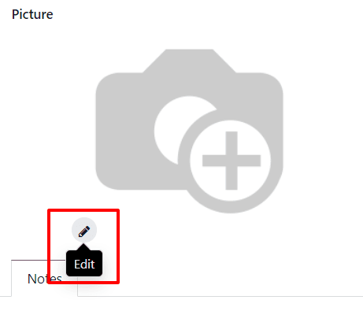
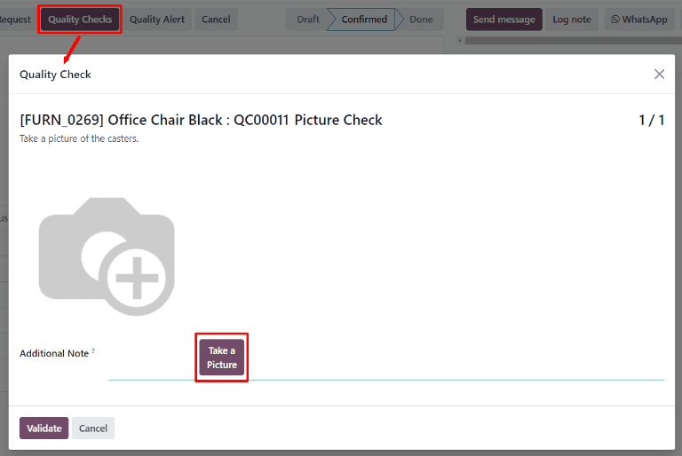

Take a Picture quality check¶
In Odoo Quality, a Take a Picture check is one of the quality check types that can be selected when creating a new quality check or quality control point (QCP). Take a Picture checks require a picture to be attached to the check, which can then be reviewed by a quality team.
Create a Take a Picture quality check¶
There are two distinct ways that Take a Picture quality checks can be created. A single check can be manually created. Alternatively, a QCP can be configured that automatically creates checks at a predetermined interval.
This documentation only details the configuration options that are unique to Take a Picture quality checks and QCP. For a full overview of all the configuration options available when creating a single check or a QCP, see the documentation on quality checks and quality control points.
Quality check¶
To create a single Take a Picture quality check, navigate to , and click New. Fill out the new quality check form as follows:
In the Type drop-down field, select the Take a Picture quality check type.
In the Team drop-down field, select the quality team responsible for managing the check.
In the Instructions text field of the Notes tab, enter instructions for how the picture should be taken.
Quality Control Point (QCP)¶
To create a QCP that will generate Take a Picture quality checks automatically, navigate to , and click New. Fill out the new QCP form as follows:
In the Type drop-down field, select the Take a Picture quality check type.
If the Maintenance app is installed, a Device field appears after selecting the Take a Picture check type. Use this field to specify a device that should be used to take quality check pictures. For information about managing devices in the Maintenance app, see the documentation on adding new equipment.
In the Team drop-down field, select the quality team responsible for managing the checks created by the QCP.
In the Instructions text field, enter instructions for how the picture should be taken.
Process a Take a Picture quality check¶
Once created, there are multiple ways that Take a Picture quality checks can be processed. If a quality check is assigned to a specific inventory, manufacturing, or work order, the check can be processed on the order itself. Alternatively, a check can be processed from the check’s page.
From the check’s page¶
To process a Take a Picture quality check from the check’s page, begin by navigating to , and then select a quality check. Follow the Instructions for how to take the picture.
After taking the picture, make sure it is stored on the device being used to process the quality check (computer, tablet, etc.). Then, click the ✏️ (pencil) button in the Picture section to open the device’s file manager. In the file manager, navigate to the picture, select it, and click Open to attach it.
On an order¶
To process a Take a Picture quality check on an order, select a manufacturing order or inventory order (receipt, delivery, return, etc.), for which a check is required. Manufacturing orders can be selected by navigating to , and clicking on an order. Inventory orders can be selected by navigating to , clicking the # To Process button on an operation card, and selecting an order.
On the selected manufacturing or inventory order, a purple Quality Checks button appears at the top of the page. Click the button to open the Quality Check pop-up window, which shows all of the quality checks required for that order.
Follow the instructions detailing how to take the picture, which are shown on the Quality Check pop-up window. After taking the picture, make sure it is stored on the device being used to process the quality check (computer, tablet, etc.).
Then, click the Take a Picture button in the Picture section to open the device’s file manager. In the file manager, navigate to the picture, select it, and click Open to attach it. Finally, click Validate on the Quality Check pop-up window to complete the quality check.
If a quality alert must be created, click the Quality Alert button that appears at the top of the manufacturing or inventory order after the check is validated. Clicking Quality Alert opens a quality alert form on a new page. For a complete guide on how to fill out quality alert forms, view the documentation on quality alerts.
On a work order¶
When configuring a QCP that is triggered during manufacturing, a specific work order can also be specified in the Work Order Operation field on the QCP form. If a work order is specified, a Take a Picture quality check is created for that specific work order, rather than the manufacturing order as a whole.
Take a Picture quality checks created for work orders must be completed from the tablet view. To do so, begin by navigating to . Select a manufacturing order that includes a work order for which a quality check is required. Open the tablet view for that work order by selecting the Work Orders tab, and then clicking the üì± (tablet) button on the order‚Äôs line.
With tablet view open, complete the steps listed on the left side of the screen until the Take a Picture quality check step is reached. Upon reaching the check, follow the instructions for how to take the picture, which appear at the top of the screen.
After taking the picture, make sure it is stored on the device being used to process the work order (computer, tablet, etc.). Then, click the Take a Picture button to open the device’s file manager. In the file manager, navigate to the picture, select it, and click Open to attach it. Finally, click Validate to complete the quality check.

If a quality alert must be created, do so by clicking the ☰ (three horizontal lines) button in the tablet view, and selecting Quality Alert from the Menu pop-up window. A Quality Alerts pop-up window appears, from which a quality alert can be created. For a complete guide on how to fill out quality alert forms, view the documentation on quality alerts.
Review a picture attached to a check¶
After a picture has been attached to a check, it can then be reviewed by quality team members or other users. To do so, navigate to , and select a quality check to review.
The attached picture appears in the Picture section of the quality check form. After reviewing the picture, click the Pass button if the check passes, or the Fail button if the check fails.